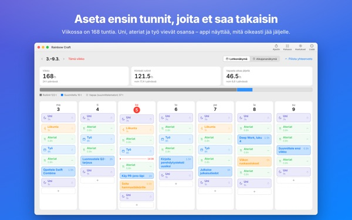
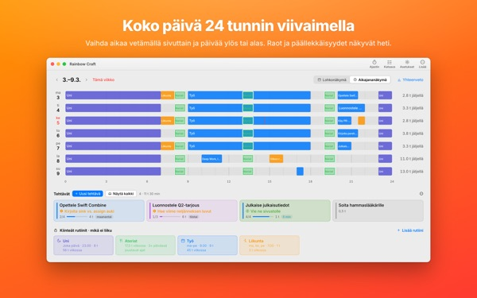
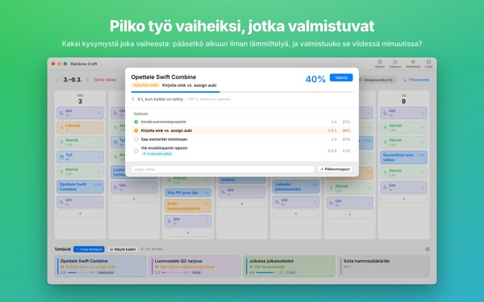
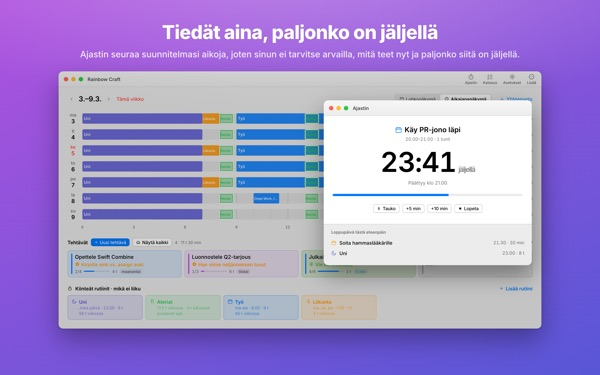
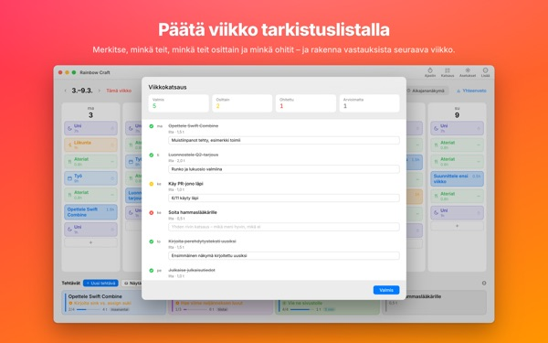

Mahtuuko tämä kaikki
oikeasti tälle viikolle?
Rainbow Craft levittää viikkosi Macilla päivien ja tuntien mukaan. Aloita ajasta, josta et voi luopua, kuten unesta, aterioista ja työstä, vedä tehtävät jäljelle jääviin väleihin ja katso, mikä oikeasti mahtuu.
Suunnittelu, rutiinit, tehtävät, katsaus, ajastin ja kalenterin tuonti ovat ilmaisia.

Suunnittele viikko tässä
Lisäsimme valmiiksi neljä rutiinia, joita sovellus ehdottaa ensimmäisellä avauskerralla. Kytke niitä päälle ja pois ja aseta tehtäviä päiville.
Lista kasvaa, viikko ei.
Tehtävälista ei kerro, mahtuuko se viikkoosi. Kun uni, syöminen ja työmatkat ovat vieneet osansa, jäljellä on vähemmän kuin luulet. Rainbow Craft näyttää nuo tunnit numeroina ja ruutuina ja antaa kokeilla jokaista tehtävää oikealla paikalla.
Päivä 24 tunnin viivaimella
Aikajananäkymä levittää päivän 24 tunnin viivaimelle. Aukot ja päällekkäisyydet näkyvät heti, ja sinä valitset, miten päällekkäiset asiat asettuvat.
Tuo kokoukset ja tapaamiset Macin Kalenterista kirjoittamatta niitä kahteen kertaan. Halutessasi suunnitelmat menevät myös erilliseen Rainbow Craft -kalenteriin, jonka näet iPhonessa. Muita kalentereitasi ei koskaan muuteta.

Pilko isot työt vaiheiksi, jotka valmistuvat
Isot työt jumittuvat, kun jokin on vielä tiellä. Sovellus kysyy jokaisesta vaiheesta kaksi asiaa: voitko aloittaa ilman lämmittelyä? Saatko sen valmiiksi viidessä minuutissa?
Molemmat täyttävä vaihe on pala, jonka voi napata aina, kun viisi minuuttia vapautuu. Muu vaatii varattua aikaa. Jos sovellus arvioi väärin, päätät sinä.

Mitä teet nyt ja kauanko on jäljellä
Kun aloitusaika koittaa, suunnitelma siirtyy käynnissä olevaksi, ja kun aika loppuu, sovellus kysyy, saitko valmista. Ajastin seuraa aikatauluasi.
Nyt-ajastin-widget näyttää käynnissä olevan tehtävän ja jäljellä olevan ajan avaamatta sovellusta.

Päätä viikko tarkistuslistalla
Viikkokatsaus on yksi kortti päivää kohden. Merkitse, mitkä tehtiin, tehtiin puoliksi tai ohitettiin, ja käytä sitä seuraavan viikon suunnitteluun.
Samalla iCloud-tilillä tehtävät kulkevat tämän sovelluksen ja iPhonen Rainbow of Desiren välillä, joten Macilla suunniteltu päivä kulkee mukanasi.

Alkuun kolmessa vaiheessa
- 1
Merkitse kiinteät tunnit
Joka viikko toistuvat asiat, kuten uni, ateriat ja työ, ovat rutiineja. Sovellus ei täytä mitään puolestasi.
- 2
Kirjoita tehtäväsi
Yksi riville alhaalla kohdassa Tehtävät. Milloin ne teet, ei tarvitse vielä tietää.
- 3
Vedä ne päiville
Päivälle pudotettuna tehtävästä tulee suunnitelma. Siirtyykö päivä? Vedä se toiselle päivälle tai takaisin listalle.
Laskelma ehdotetuilla rutiineilla
- Viikko
- 168 tuntia
- Uni · 8 tuntia päivässä
- 56 tuntia
- Ateriat · kolmesti päivässä
- 17,5 tuntia
- Työ · opiskelu · 9 tuntia arkisin
- 45 tuntia
- Liikunta · 1 tunti ma, ke, pe
- 3 tuntia
- Aika, joka sinulla oikeasti on tällä viikolla
- 46,5 tuntia
Nämä ovat vain ehdotuksia. Valitse ja säädä rutiinit omaan elämääsi. Loma- tai matkapäivinä poistat työn vain siltä päivältä.
Kaikki, mitä tämän viikon elämiseen tarvitaan, on ilmaista
Ilmainen
- Viikko- ja päiväsuunnitelmat, rutiinit ja tehtävät ilman rajaa
- Aikajananäkymä ja vaiheisiin pilkkominen
- Viikkokatsaus, jonka voi myös kopioida tekstinä
- Ajastin ja Nyt-ajastin-widget
- Kalenterin tuonti
- Synkronointi iPhonen Rainbow of Desiren kanssa
- Trendit kahdelta viime viikolta
Plus · Pro
- Plus: 8 viikon trendit, parhaat päiväsi ja kellonaikasi
- Plus: suunniteltu ja toteutunut rinnakkain
- Plus: hyvän viikon suunnitelma tälle viikolle kerralla
- Pro: kaikki Plussasta ja aikataulun jakaminen vain luku -linkillä
- Pro: yksi osto avaa Pron myös iPhone-sovelluksessa
Kumpikin tasona vuositilaus tai kertaosto ikuisesti
Hinnat näet sovelluksessa ja App Storessa. Vuositilaus uusiutuu automaattisesti, ellet peru sitä viimeistään 24 tuntia ennen kauden loppua. iPhonella ostettu Pro toimii myös Macilla samalla iCloud-tilillä.
Usein kysyttyä
Pitääkö olla kirjautuneena iCloudiin?
Ei, jos käytät sitä vain Macilla. Sitä tarvitaan iPhonen kanssa synkronointiin ja aikataulun jakamiseen.
Muuttaako sovellus kalentereitani?
Ei koskaan olemassa olevia kalentereita. Tuonti vain lukee valitsemasi kalenterit. Jos otat käyttöön suunnitelmien kirjoittamisen Rainbow Craft -kalenteriin, sovellus luo sen erillisen kalenterin ja kirjoittaa vain sinne. Voit poistaa sen milloin tahansa Kalenteri-sovelluksessa.
Macilla kirjoitetut tehtävät eivät näy iPhonessa.
Tarkista, että molemmat laitteet käyttävät samaa iCloud-tiliä ja että Rainbow of Desire on asennettu iPhoneen. Synkronointi kulkee iCloudin kautta ja voi kestää muutaman minuutin.
Sulkeutuuko sovellus, kun suljen ikkunan?
Ei. Sovellus jatkaa toimintaansa. Avaa ikkuna uudelleen Ikkuna-valikosta tai osoittamalla Dockin symbolia.
Mitä tehtävilleni ja suunnitelmilleni tapahtuu päivityksessä?
Ne pysyvät täsmälleen ennallaan. Päivitykset eivät muuta tai poista kirjoittamaasi.
Miten vaihdan sovelluksen kielen?
Valitse se Asetusten yläreunasta kohdasta Language · 언어 · 語言, niin sovellus avautuu uudelleen sillä kielellä. Kieliä on 23. Itse kirjoittamiasi rutiinien nimiä ja tehtäviä ei käännetä.
Uusi Mac, ja Plus tai Pro katosi.
Kirjaudu samalla Apple-tilillä ja osoita Asetuksissa Palauta osto. Peruutus tehdään App Storen tiliasetuksista.
Mihin kirjoittamani tallentuu?
Ei tiliä, ei rekisteröitymistä eikä kehittäjän palvelinta suunnitelmillesi. Kirjoittamasi pysyy laitteillasi ja omassa iCloudissasi. Sovellus lähettää nimettömiä käyttötilastoja ilman sisältöäsi, ja ne voi poistaa käytöstä Asetuksista kohdasta Lähetä anonyymejä käyttötilastoja.
Jäitkö jumiin tai näyttääkö jokin oudolta? Kirjoita osoitteeseen mizzking75@gmail.com. Sovelluksen asetuksista löytyy myös yhteydenottokohta.